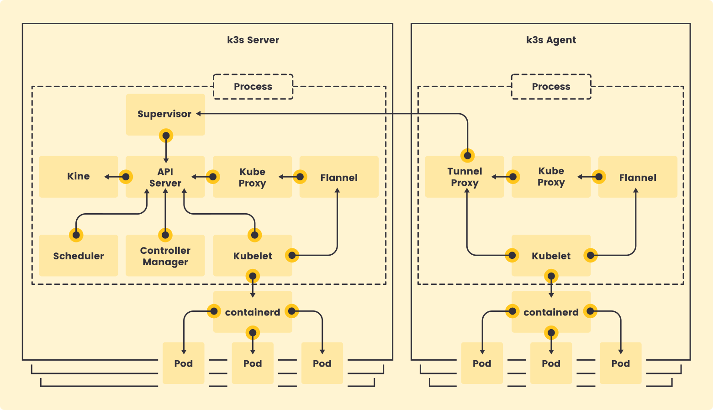
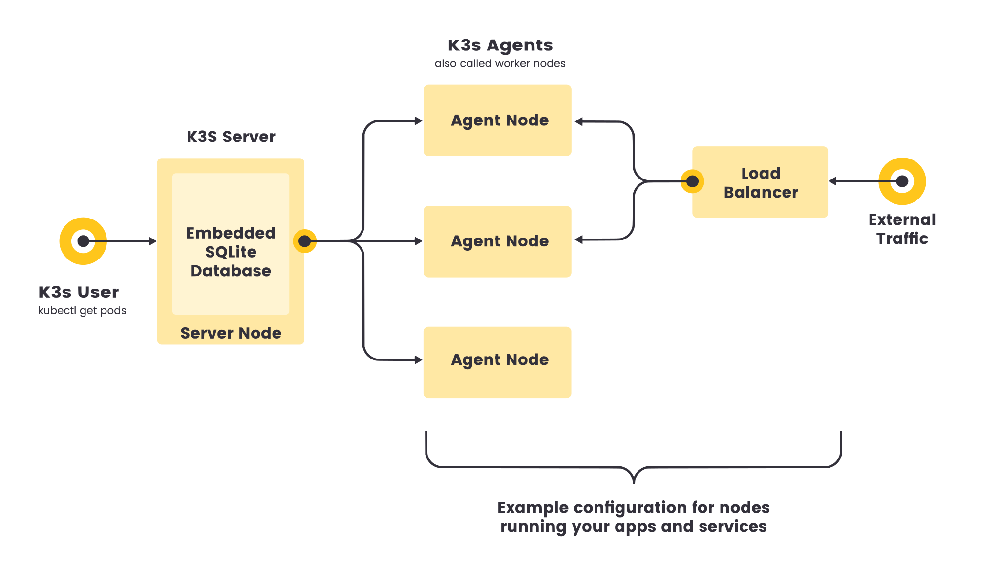
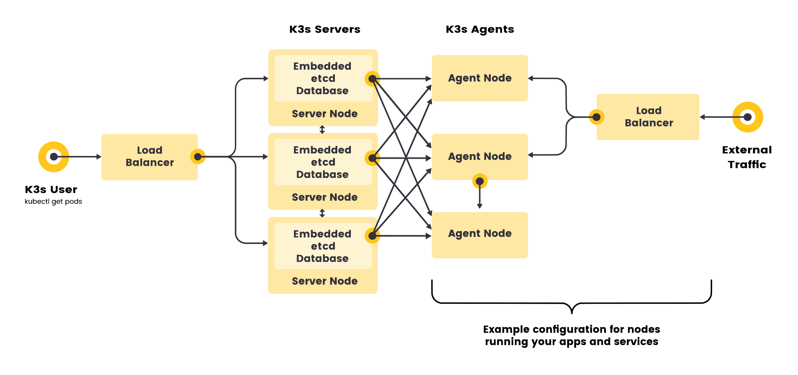
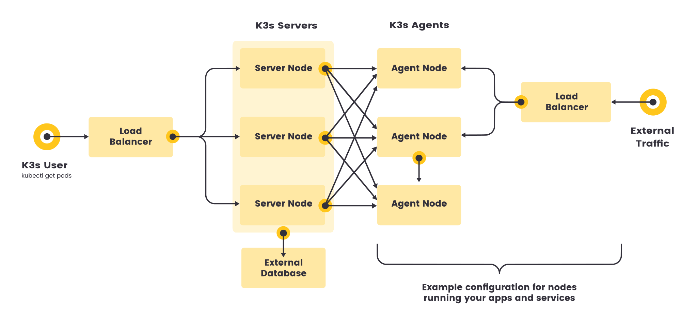
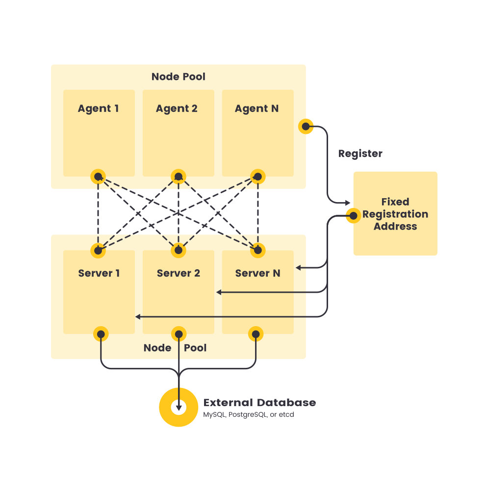

|
Ce document a été traduit à l'aide d'une technologie de traduction automatique. Bien que nous nous efforcions de fournir des traductions exactes, nous ne fournissons aucune garantie quant à l'exhaustivité, l'exactitude ou la fiabilité du contenu traduit. En cas de divergence, la version originale anglaise prévaut et fait foi. |
Architecture
Serveurs et agents
-
Un nœud serveur est défini comme un hôte exécutant la commande
k3s server, avec des composants de plan de contrôle et de stockage de données gérés par K3s. -
Un nœud agent est défini comme un hôte exécutant la commande
k3s agent, sans aucun composant de stockage de données ou de plan de contrôle. -
Les serveurs et les agents exécutent tous deux le kubelet, l’environnement d’exécution de conteneur et le CNI. Consultez la documentation Options avancées pour plus d’informations sur l’exécution de serveurs sans agent.

Configuration à serveur unique avec une base de données intégrée
Le diagramme suivant montre un exemple d’un cluster qui a un serveur K3s à nœud unique avec une base de données SQLite intégrée.
Dans cette configuration, chaque nœud agent est enregistré auprès du même nœud serveur. Un utilisateur de K3s peut manipuler les ressources Kubernetes en appelant l’API K3s sur le nœud serveur.

K3s haute disponibilité
Les clusters à serveur unique peuvent répondre à une variété de cas d’utilisation, mais pour les environnements où la haute disponibilité du plan de contrôle Kubernetes est critique, vous pouvez exécuter K3s dans une configuration de haute disponibilité. Un cluster K3s à haute disponibilité se compose de :
-
Base de données intégrée
-
Base de données externe
-
Trois ou plusieurs nœuds serveur qui serviront l’API Kubernetes et exécuteront d’autres services du plan de contrôle
-
Un stockage de données etcd intégré (par opposition au stockage de données SQLite intégré utilisé dans les configurations à serveur unique)

-
Deux ou plusieurs nœuds serveur qui serviront l’API Kubernetes et exécuteront d’autres services du plan de contrôle
-
Un stockage de données externe (tel que MySQL, PostgreSQL ou etcd)

Adresse d’enregistrement fixe pour les nœuds agents
Dans la configuration du serveur à haute disponibilité, chaque nœud peut également s’enregistrer auprès de l’API Kubernetes en utilisant une adresse d’enregistrement fixe, comme indiqué dans le diagramme ci-dessous.
Après l’enregistrement, les nœuds agents établissent une connexion directement à l’un des nœuds serveurs.

Comment fonctionne l’enregistrement des nœuds agents
Les nœuds agents sont enregistrés avec une connexion websocket initiée par le processus k3s agent, et la connexion est maintenue par un équilibreur de charge côté client fonctionnant dans le cadre du processus agent. Initialement, l’agent se connecte au superviseur (et au kube-apiserver) via l’équilibreur de charge local sur le port 6443. L’équilibreur de charge maintient une liste des points de terminaison disponibles pour se connecter. Le point de terminaison par défaut (et initialement seul) est alimenté par le nom d’hôte de l’adresse --server. Une fois connecté au cluster, l’agent récupère une liste des adresses kube-apiserver à partir de la liste des points de terminaison du service Kubernetes dans l’espace de noms par défaut. Ces points de terminaison sont ajoutés à l’équilibreur de charge, qui maintient ensuite des connexions stables à tous les serveurs du cluster, fournissant une connexion au kube-apiserver qui tolère les pannes de serveurs individuels.
Les agents s’enregistreront auprès du serveur en utilisant le secret de cluster de nœud ainsi qu’un mot de passe généré aléatoirement pour le nœud, stocké à /etc/rancher/node/password. Le serveur stockera les mots de passe pour les nœuds individuels en tant que secrets Kubernetes, et toute tentative ultérieure doit utiliser le même mot de passe. Les secrets de mot de passe des nœuds sont stockés dans l’espace de noms kube-system avec des noms utilisant le modèle <host>.node-password.k3s. Cela est fait pour protéger l’intégrité des identifiants de nœud.
Si le répertoire /etc/rancher/node d’un agent est supprimé, ou si vous souhaitez rejoindre à nouveau un nœud en utilisant un nom existant, le nœud doit être supprimé du cluster. Cela nettoiera à la fois l’ancienne entrée de nœud et le secret de mot de passe du nœud, et permettra au nœud de (re)rejoindre le cluster.
Si vous réutilisez fréquemment des noms d’hôte, mais que vous ne pouvez pas supprimer les secrets de mot de passe des nœuds, un identifiant de nœud unique peut être automatiquement ajouté au nom d’hôte en lançant des serveurs ou des agents K3s en utilisant le drapeau --with-node-id. Lorsqu’il est activé, l’ID du nœud est également stocké dans /etc/rancher/node/.